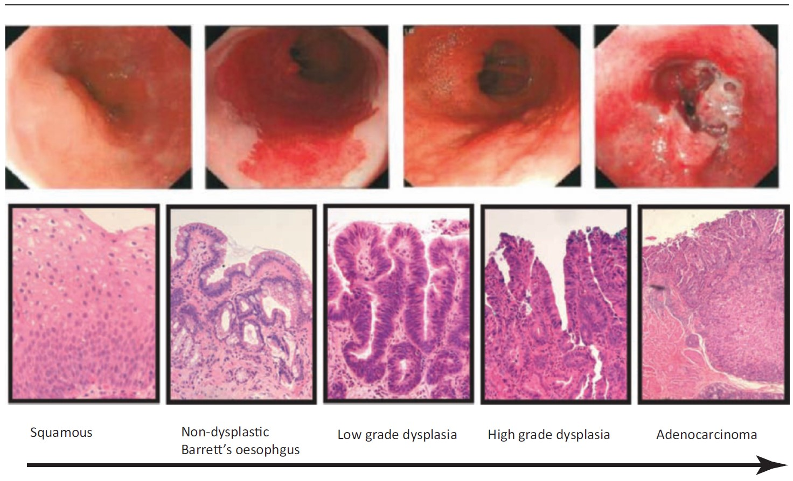
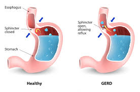
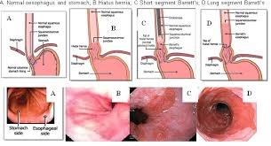

17–18 на 100 000 — заболеваемость
5-летняя выживаемость <20%
Спикер остаётся в кадре — цифры как подкрепление, не приговор
Верхний блок: "17-18" Raleway Black 72px #01E8AB, мелко "на 100 000" Light 14px серый
Нижний блок: "<20%" Raleway Black 72px #E05555, мелко "5-лет выживаемость" Light 14px серый
- Профессор, доктор медицинских наук
- Проректор по науке СЗГМУ им. Мечникова
- Заведующая кафедрой внутренних болезней
Дисклеймер
Этот канал предоставляет информацию о здоровье в образовательных целях. Мы не даём медицинских рекомендаций и не заменяем консультацию врача.
Перед приёмом любых препаратов проконсультируйтесь с лечащим врачом.
Ваше здоровье — ваша ответственность.
и язвы
пищевода
Лестница осложнений (понятно + профессионально):
- Изжога (ГЭРБ) — хронический заброс кислоты
- Воспаление и язвы (эзофагит) — слизистая разрушается
- Сужение пищевода (стриктуры) — трудно глотать
- Предрак (пищевод Барретта) — клетки перерождаются
- РАК (аденокарцинома) — крайне плохой прогноз
Референс: Barrett's progression (Squamous → Barrett's → Dysplasia → Adenocarcinoma)

Кадр 1: "Изжога" #4ADE80 Bold 48px
Кадр 2: "Воспаление и язвы" #F59E0B Bold 48px, мелко "(эзофагит)" Light 20px серый
Кадр 3: "Сужение пищевода" #F97316 Bold 48px, мелко "(стриктуры)"
Кадр 4: "Предрак" #E05555 Bold 48px, мелко "(пищевод Барретта)"
Кадр 5: "РАК" #DC2626 Black 72px, мелко "(аденокарцинома)"
Шрифт: Raleway. Позиция: внизу или сбоку, не перекрывая иллюстрацию.
Что разрушает пищевод
- Кислота из желудка
- Желчь (опаснее кислоты)
- Ферменты поджелудочной
- Повреждение стенок
- Предрак → рак
Что разрушает пищевод (элементы на словах):
- Кислота — основной агрессор
- Желчь — ещё опаснее кислоты
- Ферменты — расщепляют ткани
Результат: воспаление → изменение клеток → предрак → рак
Референсы:
.webp)


Кадр 1: "Кислота" рядом со стрелкой, Raleway Bold 24px белый
Кадр 2: "Желчь" рядом с жёлто-зелёной стрелкой
Кадр 3: "Ферменты" рядом с оранжевой стрелкой
Кадр 4: "Предрак" #E05555 Bold 36px, мелко "(пищевод Барретта)" Light 18px серый
Чем лечить изжогу?
Подручные
— Сода (вредит)
— Мел
— Антациды (минуты)
Стандарт
— ИПП (без рецепта)
— Гастроэнтеролог
— Эндоскопия
Стандарт лечения
- ИПП — первая линия (РГА)
- Без рецепта (OTC)
- Антациды — только помощник
- Цель: время до врача
НЕ работает (левая колонка, сразу): Сода (рикошет), Мел, Антациды
Стандарт (правая, на "ИПП"): ИПП (1-я линия, OTC) → Врач → Эндоскопия
A: Лев. столбец "ПОДРУЧНЫЕ СРЕДСТВА" #E05555 Bold 28px, пункты: "Сода — рикошет", "Мел — не доказано", "Антациды — минуты".
A: Прав. столбец "СТАНДАРТ ЛЕЧЕНИЯ" #4ADE80 Bold 28px, пункты: "ИПП — 1-я линия", "Гастроэнтеролог", "Эндоскопия".
B: "Стандарт лечения" #01E8AB Bold 24px. Пункты: "ИПП", "Без рецепта (OTC)", "Антациды — помощник", "Цель: время до врача".
Референсы (сравнение: народные vs стандарт):
Google Images: two-column comparison infographic
Стиль: два столбца на всю ширину экрана. Левый красноватый (подручные), правый зеленоватый (стандарт). Иконки + текст. Чёткое противопоставление.
Осознанное самолечение
- OTC-препарат (без рецепта)
- Знает свой диагноз
- Кратковременное обострение
- Мост до визита к врачу
- OTC-препарат (ИПП, безрецептурный)
- Знает диагноз
- Кратковременное обострение
- Мост до гастроэнтеролога
Не замена обследованию!
Текст (опционально в AE): "ПСЕВДОСПЕЦИАЛИСТЫ" Raleway Black, #E05555, lower third.
энтеролог
тика
псевдоизжога
энтеролог
вание
Маршрут пациента:
- Терапевт — первый контакт
- Гастроэнтеролог — сложные случаи
- Диагностика — ГЭРБ / функц. изжога / псевдоизжога
Финал: "Найти специалиста, которому вы поверите."
A: Узел 1 "Терапевт" #4ADE80 Bold 28px, мелко "1-й контакт". Узел 2 "Гастроэнтеролог" #29A6CB. Узел 3 "Диагностика" #6B5CE7. Ветки: "ГЭРБ", "Функц. изжога", "Псевдоизжога" Light 16px.
B: Под иконками: "Терапевт", "Гастроэнтеролог", "Обследование" Bold 16px.
Референсы (маршрут пациента):
Google Images: patient pathway flowchart
Google Images: referral chain infographic
Стиль: 3 узла слева направо, стрелки между ними. Под последним узлом — ветвление на 3 варианта диагноза. Как flowchart, но красивый и минималистичный.